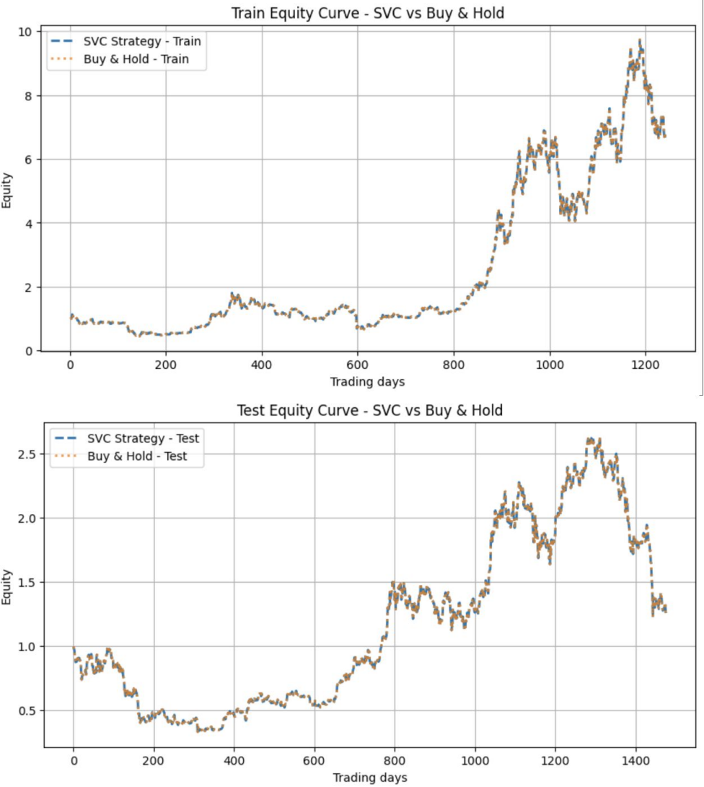
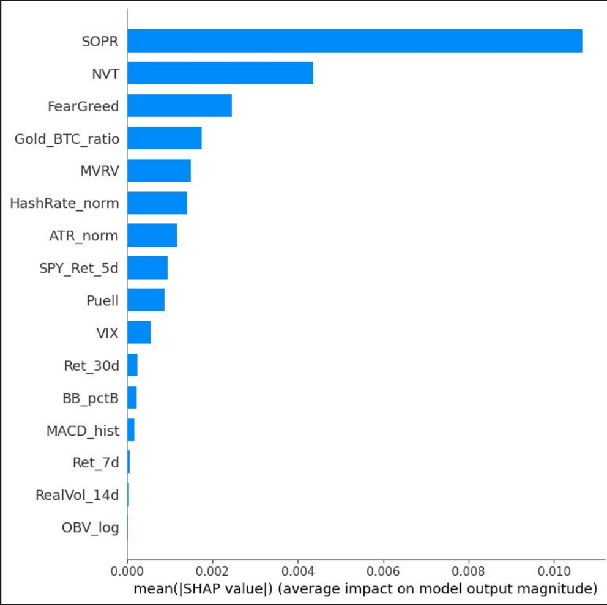

Forecasting Bitcoin Price Movements with Classifier Models

Overview
Built and tested machine learning classifiers that predict whether Bitcoin's price will go up or down the next day, using on-chain blockchain indicators, market sentiment, and macro data alongside standard price signals. The project followed a full quantitative research workflow: leak-free data splits, hyperparameter tuning, a simulated trading backtest, model explainability, and statistical tests for whether the results beat random chance.
What we built
- Assembled 3,002 days of Bitcoin price data with S&P 500, gold, and VIX data, the Crypto Fear & Greed Index, and on-chain metrics (hash rate, NVT, MVRV Z-score, Puell Multiple, SOPR).
- Engineered 17 features, more than half of them non-price, and kept the best 16 using mutual information feature selection.
- Split the data by date to avoid look-ahead bias: training on the 2018–2021 bull market and testing on the 2022 bear market through the 2024 halving recovery, a genuinely different market regime.
- Tuned an SVM (four kernels), XGBoost, and a stacked LSTM with time-series cross-validation. The polynomial-kernel SVM scored best at 54.2% cross-validation accuracy.
- Backtested the SVM as a trading strategy against buy-and-hold, measuring profit factor, CAGR, Sharpe ratio, and final equity.
- Explained the model with SHAP values and stress-tested it with a White Reality Check and a Monte Carlo permutation test (1,000 samples each).
Results
The honest result is that the model has no real edge. On the test set it predicted "up" every day, so its equity curve simply tracks buy-and-hold, and test accuracy was 49.3%. Both statistical tests returned a p-value of 1.0, confirming the model does no better than random guessing. Catching that, rather than reporting the attractive training-period returns, was the point of the validation steps.

Train and test equity curves. The SVC strategy overlaps buy-and-hold because the model always predicts "up".

SHAP feature importance. The model leaned most on on-chain and sentiment signals (SOPR, NVT, Fear & Greed), though every feature's impact was small.
Tools
Python, scikit-learn, XGBoost, LSTM, SHAP, TimeSeriesSplit cross-validation, Yahoo Finance, Glassnode / CryptoQuant data